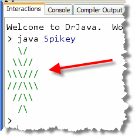
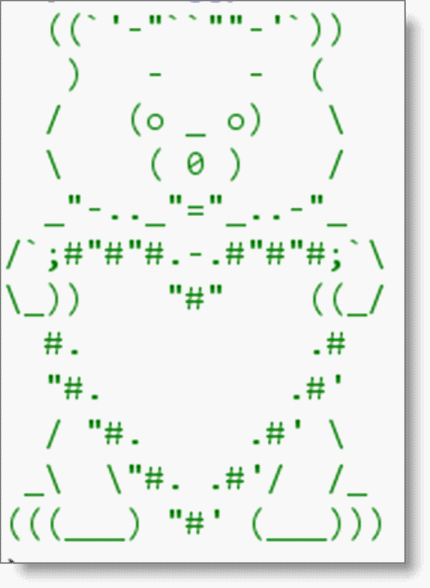

Now that you've had some practice
with the mechanics of Java programing, let's see if
you can apply it to writing a pair of simple programs that display
String output. Your goal is to write both of these
programs from "scratch", which is what you'll need to do on the
Programming Proficiency exams.
A: TicTacToeBoardPrinter
This is a "practice" exercise to get you ready for the exams. Try this after you've read the first chapter in the online text and completed the first homework, to see how much you've absorbed.
To complete this lab, start DrJava (fresh, with no other apps open) and create a new console-mode application in the Week01 folder.
- Name the program TicTacToeBoardPrinter.
- The output of the program should look like this:
+---+---+---+ | | | | +---+---+---+ | | | | +---+---+---+ | | | | +---+---+---+
- Don't put any spaces around your tic-tac-toe board.
- You should have exactly seven lines of output.
Once you have created the program, compile it and run the Check program to see your score. If you didn't do as well as you thought, then fix your mistakes, and Check it again.
You can continue the edit, compile, test, edit cycle until you are satisfied, or time runs out at the end of class. Paste the results into the text area in the PDF where marked.
B: StaircasePrinter
Here is another "practice" exercise to get you ready for the exams. Create a new console-mode application in your Week01 folder.
- Name the program StaircasePrinter.
- The output of the program should look like this:
+---+ | | +---+---+ | | | +---+---+---+ | | | | +---+---+---+---+ | | | | | +---+---+---+---+Don't put any extra spaces around your staircase. You should have exactly nine lines of output.
Once you have created the program, compile it and run Check to see your score. As with Part A, you can continue the edit, compile, test, edit cycle until you are satisfied, or time runs out at the end of class. Once you are finished, paste this into the PDF as well.
C: Spikey
Now that you've had some practice
with the writing programs using escape sequences, let's see if
you can apply it to writing a simple program that displays
String output. Your goal is to write this
program from "scratch", which is what you'll need to do on the
Programming Proficiency exams.
Write a "regular" console-mode
program named Spikey, (placed in your Week02 folder),
that prints the output shown here:

As with the last two homework assignments that were due today, the purpose is to make sure you know how to use escape sequences in your output. Notice that there are six lines of output with Spikey, and, there are no trailing spaces in the output.
Once you have created the program, compile it and run Check to see your score. If you didn't do as well as you thought you should, fix your errors and Check again. Once you are finished, paste this into the PDF as well.
D: Huggy Bear
Soon you'll take the first CS 122 Proficiency Quiz, Console Output. On the exam, you'll be shown a picture of a "cartoon" character, and you'll be given 30 minutes to write a Java program to display the character on the console.
The first proficiency exam tests whether you've mastered:
- the mechanical process of creating a program. Do you know how to create source code, compile it, and check the results?
- the basic syntax of the Java language. Can you write a console program that prints output on the screen (from memory)?
- writing programs that use escape sequences. Do you know how to enter different kinds of "difficult" characters in your source code so that they can be displayed?
- testing your programs. When you check your code, do you understand how to read the output that the Check program produces, and use it to correct your source code?
To make sure that you can do all of these things, here's a last lab exercises, HuggyBear. See if you can do this without any help.
Write a "regular" console-mode program named HuggyBear that
prints the output shown here:

As with the previous exercises, the purpose is to make sure you know how to use escape sequences in your output. Note that there are twelve lines of output with HuggyBear. There are no trailing spaces in the output.
Once you have created the program, compile it and run Check to see your score. You should run Check frequently, making small changes and using them to help correct your errors. Once you are finished, paste this into the PDF as well.
One very useful trick is to use the Check program to help figure out the output and spacing. Once you know how many lines are supposed to be in the output, write a program that prints some "dummy data" for each line. Then, run Check and copy the expected output from the Interactions Pane into your source code. (Of course, you'll still need to fix up all the escape sequences manually.)